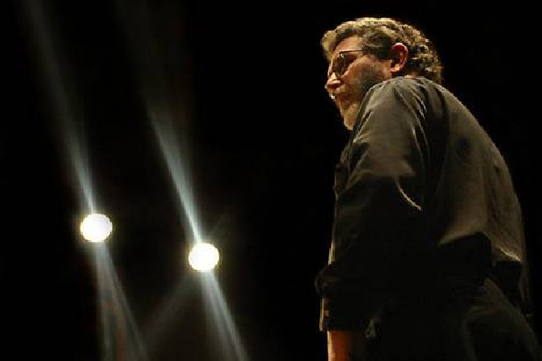

Richard McIntyre
One of Australia’s most respected and successful bassoon teachers at all levels, his teaching
places great emphasis on the establishment of a close personal relationship with each one-to-one
student, and on the development of a thorough understanding of the instrument and its techniques,
the specifics of musical fabric and effect, and the various musical functions which the bassoon fulfils in varied styles and repertoires.
His work as a youth orchestra conductor has yielded Canberran of the Year,
Sounds Australian and Advance Australia awards
Follow Richard at his webpage (link below).